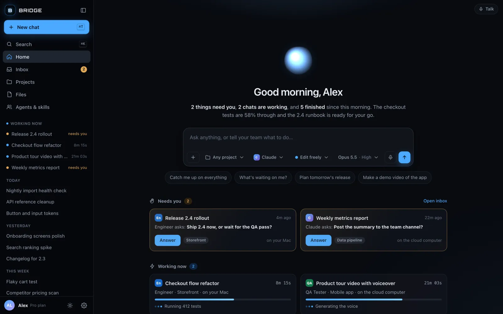
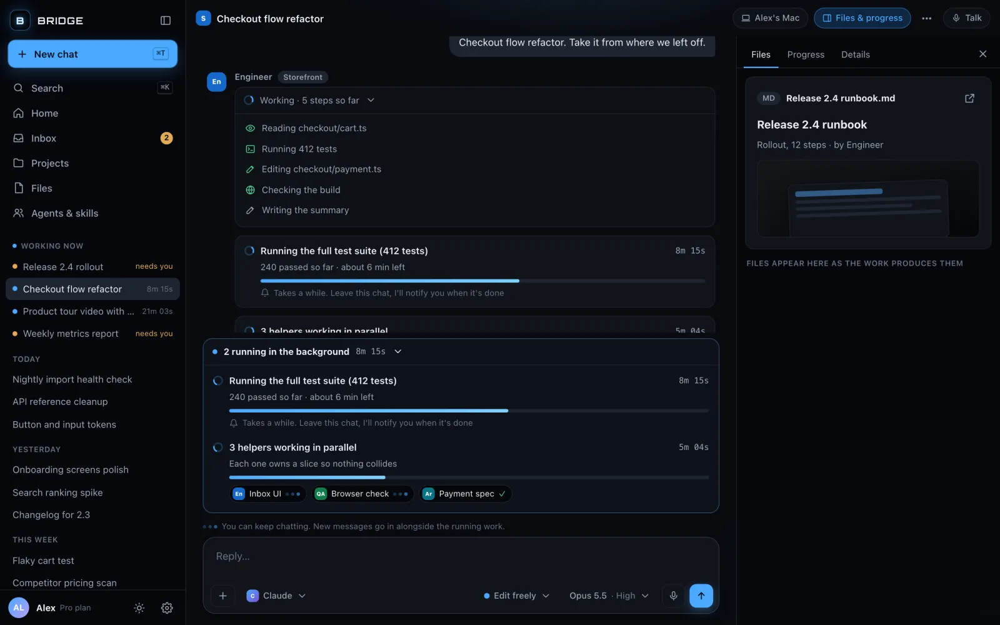
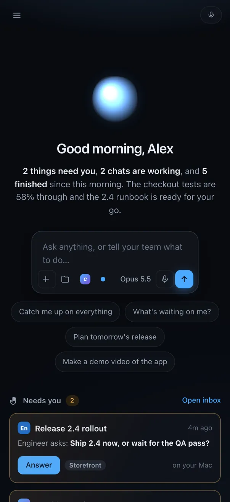
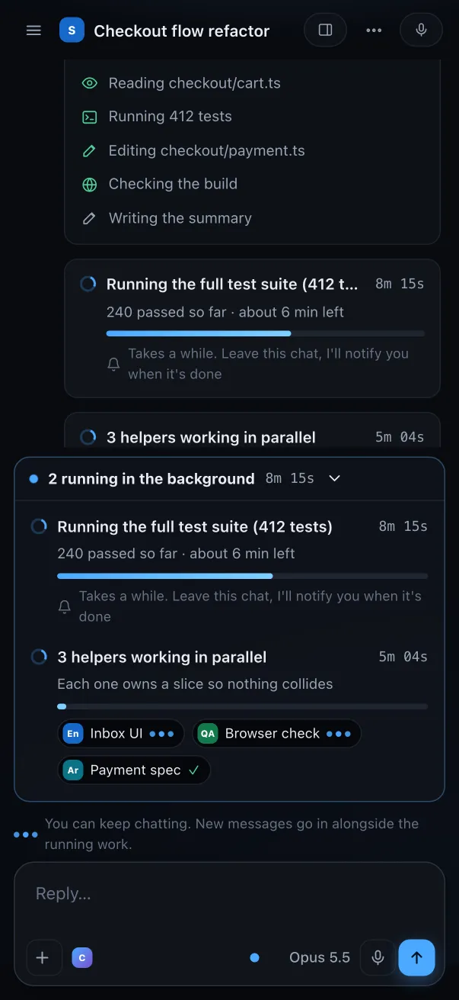
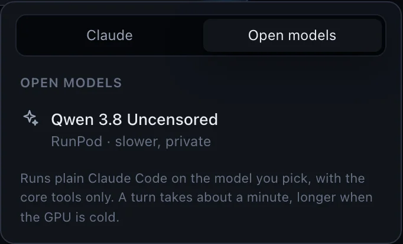

Claude Code, without the terminal.
A friendly app for the real claude CLI. Every chat starts here, long work stays in view
and keeps running when you close the window, and your hooks, skills, agents and
~/.claude stay exactly where they are. A chat in Bridge is an ordinary Claude Code session.

Home: what needs you, what is working now, and what your team made. Demo data.
What you get
Chats, not a terminal log
A turn's work folds into one line, “Worked for 6m · read 14 files”, with the answer underneath. Questions become buttons, plans get an Approve card, files it made open as cards. Raw tool calls are one toggle away.
A Home that knows what is going on
Chats that ended on a question wait under Needs you. Running work shows live timers. Documents, pages and code your chats wrote this week land in Made for you.
Projects, files and your team
A project is a folder: its chats, its CLAUDE.md and its files in one place. Agents and skills are a team you can hand a task to, or leave it on Auto and Bridge picks who fits each message.
⌘K for everything, ⌘F for anything you ever ran
The palette finds chats, projects, files, agents and skills. ⌘F reads every transcript on the machine and ranks on how many of your words a session covers.
Talk to it
Tap the orb and ask what is waiting on you. Your assistant knows every running chat and speaks the answer; local speech-to-text and voice on the Mac when you have them.
A real macOS app
./mac/build.sh produces Bridge.app: a Swift shell around a WKWebView that starts the bundled server and shows it in a native window. No Electron, no Chromium.
Long work stays visible, and survives closing the app
A turn runs on the server, not in the window. Close Bridge mid-turn, reopen it tomorrow, and the chat picks up where the work is.

- Job cards for anything slow: a test suite, a render, three helpers in parallel, each with its own timer.
- The background tray above the composer says what is still running. Keep typing; your message goes in when the turn ends.
- Working now in the sidebar ticks for every running chat, so a 20-minute silent step never looks frozen.
- A ping when it is done, or when it stops on a question: a card, a voice line and a Mac notification, even if the window was closed.
On your phone, on a cloud box, on open models


A phone app
The same chats in a Flutter app for iOS and Android, also served by Bridge itself at /m/. The web app works at phone width too.
An optional cloud computer
Point Bridge at a second Bridge on a Fly sprite and pick Mac or Cloud per chat. Cloud chats keep going with the Mac asleep or closed, and show up in the same list. A chat can move to the cloud mid-way.
Email sign-in for remote hosting
Host Bridge on the internet and it asks for a sign-in: a Supabase magic link or the 6-digit code from the same email, limited to an allowlist. Run it locally and there is no gate at all.
Open models next to Claude
The model menu has two tabs, Claude and Open models. Qwen runs on your own RunPod endpoint through a local adapter: same app, same tools, private and flat-cost, slower.

How it works
One Bun server, zero dependencies, the real CLI underneath.
- Reads
~/.claude. Transcripts become chats, cached by size and modification time; the tail of a running transcript says what it is doing now and what is still out in the background. - Spawns the real CLI per turn with
--output-format stream-jsonand--session-id/--resume. The turn belongs to the server, so the page can close; reopening a chat follows its transcript from where the page left off. - Searches with ripgrep, one pass per term in parallel, scoring on term coverage rather than raw hit count.
Get it
The new Bridge is on the friendly-ux branch until it is released. Build it from source:
git clone -b friendly-ux https://github.com/mrmading/bridge.git
cd bridge
./bridge # http://localhost:4270
./mac/build.sh # → dist/Bridge.app
./mac/dmg.sh # → dist/Bridge-0.1.6.dmg
cd mobile && flutter build web --base-href /m/ --release # the phone app at /m/Requires Bun and the claude CLI, or let the app install them on first run; Flutter only for the phone app.
The 0.1.6 download is the previous Bridge, with terminal tabs instead of chats.
Remote hosting (a Cloudflare Worker in front, a sprite behind, Supabase sign-in) is described in deploy/README.md.
Safety
Bridge does not expose your machine.
Every file API is confined to the folders you add, and inside those it still refuses anything
matching .ssh, .aws, .gnupg, .credentials,
.env*, *.pem or id_rsa, reads and writes alike. New chats
default to “Edit freely” (edits without asking, asks before commands); Autopilot has to be chosen.
Hosted on the internet, every /api call needs a signed-in session from an allowlisted
email; the open-model adapter only ever answers Bridge's own turns on the same machine.